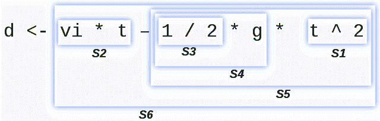

Introducción a la Programación con PseInt
Reglas de precedencia
- Potenciación (^).
- Multiplicación (*), división (/), y el resto de la división (%).
- sumas y
- operadores
- operador lógico ~ (not).
- operador lógico & (and).
- operador lógico | (or).
Estas reglas puede romperse utilizando los delimitadores paréntesis “(“y “)” ya que estos delimitadores tienen mayor prioridad sobre cualquier operador.
Veamos un ejemplo tomando la fórmula de cálculo de la distancia recorrida por un proyectil en tiro vertical. En matemática se expresaría como:
|
d = vi. t - ½ g. t2 |
donde d es la distancia recorrida (la incógnita), vi es la velocidad inicial del proyectil, t es el tiempo que transcurrió y g es la aceleración de la gravedad.
Esto en pseudocódigo se expresaría como:
d <- vi * t – 1 / 2 * g * t ^ 2
definamos como lote de prueba los siguientes valores: vi ← 100
t ← 10
g ← 9.8
Analicemos por parte, primero d es la variable de destino, no forma parte de la expresión y el símbolo < es la instrucción que indica la acción de almacenamiento en la memoria.
Luego la expresión está conformada por varias subexpresiones, estas se resuelven según las reglas de precedencia de su operador (se utilizara la letra S para indicar cada subexpresión):

- Se resuelve primero la potenciación S1 ← t ^ 2, con lo cual S1 vale
- Luego hay un conjunto de productos y divisiones en el mismo nivel, por lo tanto tendrá prioridad la de la izquierda: S2 ← v1 * t, (100 * 10) resultado
- S3 ← 1 / 2, resultado 5
- S4 ← S3 * g, (0.5 * 9.8) resultado 4.9
- S5 ← S4 * S1, (4.9 * 100) resultado 490
- finalmente la resta que posee el menor nivel de precedencia, S6 ← S2 – S5, (1000 – 490) resultado final 510.
Obra publicada con Licencia Creative Commons Reconocimiento Compartir igual 4.0